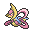
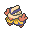
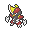
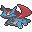
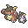
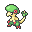

2022年4月7日
【ORASトリプル】ブルンゲル入りリザドラン
リザードン＠リザードナイトＹ（もうか）
かえんほうしゃ／エアスラッシュ／おいかぜ／まもる
ヒードラン＠もくたん（もらいび）
ねっぷう／ラスターカノン／だいちのちから／まもる
ニンフィア＠こだわりメガネ（フェアリースキン）
ハイパーボイス／ムーンフォース／ねごと／
ランドロス霊＠こだわりスカーフ（いかく）
じしん／いわなだれ／ばかぢから／とんぼがえり
ハリテヤマ＠とつげきチョッキ（あついしぼう）
ねこだまし／インファイト／はたきおとす／フェイント
ブルンゲル＠オボンのみ（ちょすい）
シャドーボール／れいとうビーム／じこさいせい／トリックルーム
ぽけっとふぁんくしょん！構築経緯
パデックさんによるポケモン使用率ランキングを見るにリザYの使用率が微妙に低い、 ということで自分がリザY軸の構築を使ってみることに。 トリプルバトルwikiの晴れスイッチを参考に組んでみた。↓
うーん何かクレセリアの枠が違う…凍える風は強いけど凍える風以外が撃てない… それより雨やヒードランに対してサイクルを有利に進めるための水タイプが欲しい！
欲しい要素として
ということでミロカロスをブルンゲルにチェンジ。 そのまま使ってみたところなんと6連勝したのでそのまま使ってみることにしました。
基本方針
相手の構築にニンフィア、リザードン+ヒードラン どちらが通りやすいかを考え、片方を大事に扱うメインアタッカーとし、 もう片方はメインアタッカーが苦手とするポケモンを倒すサブアタッカーとする。それぞれ主な苦手なポケモン
リザドラン:ハリテヤマ、メガカメックス、霊獣ランドロス
ニンフィア:ギルガルド、ヒードラン、メガリザードンY、キリキザン
サブアタッカー達の高火力技で相手を消耗させながらサイクルを回し、 最終的にメインアタッカーの範囲技を通すことを考えてプレイする。
個別解説
ヒードラン＠もくたん（もらいび・ひかえめ）
171(36)-×( )-125( )-200(252)-126( )-125(220)
ねっぷう／ラスターカノン／だいちのちから／まもる
ぽけっとふぁんくしょん！役割:晴れ熱風によるアタッカー要因にして優秀な耐性を活かしたサイクル要因
晴れ熱風は耐性受けされやすいので火力でゴリ押しするために木炭。
身代わりを採用していた時期もあったのですが、身代わりは「有利な相手に対して勝ちを確定させるための技」 という側面が強く、それより構築全体で打点の少ないメガボーマンダやバンギラスへの 遂行速度を速くしたいと思ったためラスターカノンに変更。
「確認してないけどどうせHCベースだろう」と昔ダブルで使ってた個体を再利用してたのですが、 今確認したところCSベースでした。 微妙に耐久が足りない場面が多かったのでHCベースのほうがいいと思います。
ニンフィア＠こだわりメガネ（フェアリースキン・ひかえめ）
201(244)-×( )-113(220)-145(12)-151(4)-84(28)
ハイパーボイス／ムーンフォース／ねごと／
ぽけっとふぁんくしょん！役割:眼鏡ハイボによるアタッカー要因
消耗したメガカメックス軸やバンドリマンダ を一掃でき、 雨に対しては初めからかなりの圧力をかけることが出来ます。
この構築ではヒードランもエースとなれるため時には ハリテヤマやバンギラスなどのこちらのヒードランの障壁だけを ムーンフォースで削って退場するのも頭に入れておきます。
火力を削って耐久を高めたニンフィアを試験的に使っていたのですが、微妙に火力が足りない場面が多かったので普通にHCベースの方がいいと思います(2度目)
メガリザードンＹ＠リザードナイトＹ（ひでり・ひかえめ）
166(100)-×( )-98(0)-232(252)-135(0)-156(140)
かえんほうしゃ／エアスラッシュ／おいかぜ／まもる
ぽけっとふぁんくしょん！役割:サブアタッカー兼S操作要因
このポケモンが晴らさないとヒードランが始まらないのですが結構縛られやすいのが難点。
晴れ熱風なんて派手なことはせずにワイガ要員のギルガルドやハリテヤマを削って落ちるのがこの構築でのリザYです。
追い風はトリルが切れた後のS操作として使いたいですがリザY自身が縛られやすいので結構難しいです。
これもまたダブルの再利用ですがサイクル戦に混ぜるために耐久をもっと固めにしたほうがいいかも…
ハリテヤマ＠とつげきチョッキ（あついしぼう・ゆうかん）
219(0)-189(236)-96(140)-×(0)-97(132)-49(0)
ねこだまし／インファイト／はたきおとす／フェイント
ぽけっとふぁんくしょん！役割:猫騙し、フェイント、サブアタッカー
ワイガ崩しはもちろん、ニンフィアとヒードランでは対処しづらい 相手のメガガルーラ、 ヒードラン対策として重要なポケモン。
このハリテヤマが早々に落ちてしまうと上記の存在がしんどくなるので大切に扱いたいポケモンです。
フェイントはワイガ崩しだけではなく、トリルターンを稼がせない、トリルが切れた後でも相手を削り切れるなど非常に便利な技でした。
余談ですが、ニョロトノのようなオボン持ちが多いポケモンは 交代読みも兼ねてはたき落とすから入ったほうがいい気がします。
ランドロス霊＠こだわりスカーフ（いかく・いじっぱり）
165(4)-216(252)-110(0)-×(0)-100(0)-143(252)
じしん／いわなだれ／ばかぢから／とんぼがえり
ぽけっとふぁんくしょん！役割:威嚇クッション、終盤の掃除役
初手に中央に出して蜻蛉、格闘地面ほか物理技に合わせて後出しして蜻蛉が基本の流れの1つ。
相手に控えがいる限りは蜻蛉を押すのが基本的に正解だと思います(相手も交代してくるので)
終盤では火力スピードを活かした岩雪崩地震での一掃が強力ですが、ワイガ持ちが残ってると悲しいことになります。 (なのでハリテヤマを残せるよう頑張りましょう)
後続に刺さらない場合は岩雪崩を押して使い捨てるのも手です(ざわさんと当たったときの試合でも使い捨てようと考えて序盤に岩雪崩を撃ってます)
ブルンゲル＠オボンのみ（ちょすい・れいせい）
207(252)-×(0)-69(4)-150(252)-125(0)-58(0)
シャドーボール／れいとうビーム／じこさいせい／トリックルーム
ぽけっとふぁんくしょん！クレセリアの代わりに入れた結果、相手の水技を受け、相手の影踏みから簡単に脱出出来るため 雨滅びに対してかなり安定するようになりました。(対戦相手からも「ブルンゲルが辛かった」と言われた) 猫騙しが効かないためトリルを安全に起動出来る点もナイス。
技は自身の延命になる自己再生に、安定して通りやすいシャドーボールとランドロスに対する冷凍ビーム。 晴れパなので水技は不採用にしました。
耐久が足りないと感じたので持ち物はオボン。
構築全体がビートダウン(ガン攻め系)なので何も考えずにHCぶっぱにしましたが、 もう少し耐久を高めて鬼火でメガガルーラや キリキザンに優位を取れるようにするとか、 持ち物をナモにしてギルガルドに対するカウンターとして使えるようにした方が良かったかもしれません。
選出・動き
基本選出はブルンゲル/霊獣ランドロス/ハリテヤマ
の並びで、威嚇と猫騙しによってブルンゲルのトリルのサポートをします。 (霊獣ランドロスは蜻蛉か交代)
その後はメインアタッカーによるトリル中の制圧を目指します。
とはいえ現在のトリプルフリーでは多種多様な構築が見られるのでこの選出には固執せずに柔軟に動きます。
例えば雨パには初手から中央ニンフィアを出しガンガン攻めていきます。
構築の利点・弱点
利点柔軟に動ける要素が多いにもかかわらず方向性さえ正しく決めれば高度なプレイングを必要としない(致命的なプレミをしなければそれでよい)
弱点
例えば、ニンフィアがメインアタッカーとなる場合リザドランで 相手のギルガルドを倒すことが求められるのですが、 ギルガルド以外のほか4,5体がメガカメックスや ランドロス等でリザドラン をマークされてしまうとギルガルドを倒しきれずこちらのニンフィアが処理されてしまいます。
サイクルしながらこちらの高火力をぶつけるのが基本方針なので、交代しても縛られる状況が続くとサイクルが成り立たないのです。
メガガルーラやメガカメックスはもちろん、 キノガッサやドンカラスといったポケモンですら非常に重かったです。
戦績
15勝/22戦 勝率67%最初に6連勝して以降は勝っては負けてを繰り返しという感じでした。
自分のプレイングが詰めきれてなかったため勝率が微妙に悪いですが上手に扱えば勝率70～75%までいけるのではないかと思っています。
ただ前述した弱点が厳しくそれ以上は勝てなさそうです。
質問や苦情はこちらまでお願いします。 Twitter マシュマロ